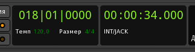
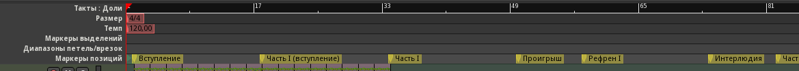
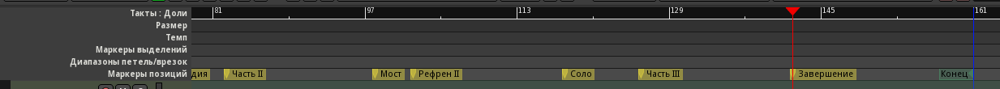

Настало время продумать структуру композиции, чтобы потом заполнить её музыкальным материалом и собрать воедино. Обычно лекала структуры довольно строго задаются жанром/направлением музыки. Уже слышно, что по жанру наш трек - электроника без следования какому-то определённому суб-жанру. Может быть, есть небольшой крен в сторону биг-бита. Значит, в структурировании у нас есть достаточно свободы, сильно злоупотреблять которой, впрочем, не стоит. Элементы, которые наверняка будут присутствовать в композиции:
Попробуем разработать схему будущей композиции. В будущем, возможно, она будет меняться в зависимости от материала. Тут нужно включить воображение на максимум и представить, как и сколько будут звучать несуществующие пока части композиции.
| Элемент | Длина, такты | Замечания |
|---|---|---|
| Вступление | 16 | Будем делать длинное вступление, во второй половине или с четвёртого такта перкуссия начинает задавать темп. |
| Часть I | 16 (+16) | "Куплет". Перед 16-тактовой первой частью ещё 16 тактов будут вступать его партии. |
| Проигрыш | 8 или 16 | Подготовка к рефрену. |
| Рефрен I | 16 | "Припев", главная тема. Кульминация. |
| Интерлюдия | 8 или 16 | Вероятно, "яма". Возможно изменение тональности, темпа. |
| Часть II | 16 | Вариация первой части, можно с другим лидирующий инструментом, изменить партии аккомпанемента. |
| Мост | 4 | Маленькое отступление, отсылка к большой интерлюдии. Возможно, контрапункт с темой второй части. |
| Рефрен II | 16 | Главная тема с небольшими вариациями. Слабая кульминация. |
| Соло | 8 или 16 | Вероятно, играется одним из инструментов аккомпанемента. |
| Часть III | 16 | Ещё одна вариация первой части. | Завершение | 16 | Может быть затуханием темы предыдущего элемента с параллельной отсылкой к вступлению. |
Особо бояться ошибиться не стоит, потому что внутренняя логика музыкального материала потом сама заставит внести необходимые коррективы.
Зайдём в Ardour с наброском и на линейке расставим позиции элементов структуры, как в таблице. Ориентируемся на наименьшие из возможных продолжительностей, чтобы не провоцировать затягивания. Выберем ширину сетки в один такт и на линейке Маркеры позиций вводим данные. На содержимое окна редактора не обращаем внимания.
Отсчитывать можно по линейке или, лучше, передвигая курсор позиции и наблюдая за индикатором. Кстати, индикаторы лучше поменять местами, чтобы первый показывал такты, а второй - время. Тогда всплывающий текст при нажатии на маркер будет показывать номер такта. В контекстном меню первого выбираем Такты : Доли, второго - Тайм-код.
Маркеры создаются пунктом Создать маркер позиции контекстного меню этой линейки, переименовываются двойным щелчком. По правому щелчку на сам маркер можно заблокировать его перемещение пунктом Блок. Это сразу можно сделать для вступления, оно точно перемещаться никуда не будет.
На линейке уже есть маркеры начала и конца: первый можно переместить на первый такт, а вступление начинать со второго такта. Маркер конца должен быть на два-три такта дальше окончания последней части (Завершение), на случай если там окажутся хвосты реверберации и задержек. Лишняя тишина потом, когда трек будет готов, удаляется из рендера в аудио-редакторе.
На рисунках показана расстановка маркеров, от начала до второй части и от второй части до конца. В итоге время звучания с темпом 120 BPM у нас получается около 5 минут 12 секунд. Это не так много, но есть надежда, что одна из частей окажется длиннее, чем рассчитано. Либо придётся переосмыслить структуру позже.
 